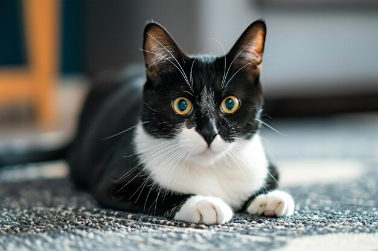
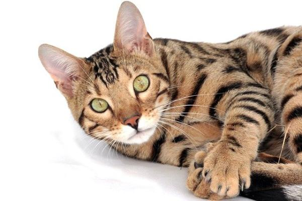

Bienvenido a Mundo Gatuno
Todo sobre nuestros amigos felinos
¿Por qué amamos a los gatos?
Los gatos son elegantes, independientes y llenos de personalidad. Son compañeros tranquilos, perfectos para hogares pequeños o grandes.
- Sus ronroneos son relajantes y tienen beneficios terapéuticos.
- Son animales limpios por naturaleza y muy ágiles.
- Son expertos cazadores, incluso en el hogar.
Curiosidades sobre los gatos
- Los gatos pasan el 70% de sus vidas durmiendo.
- Pueden girar sus orejas hasta 180 grados.
- Un gato puede alcanzar velocidades de hasta 48 km/h en cortas distancias.
- Su ronroneo puede variar de 25 a 150 Hz.


Cuidados básicos para gatos
- Proporcionar comida de calidad adaptada a su edad y salud.
- Ofrecer agua fresca siempre disponible.
- Limpiar regularmente su caja de arena.
- Realizar visitas veterinarias periódicas.
- Dedicar tiempo para jugar y estimular su actividad física.
Tipos de razas de gatos
Existen muchas razas de gatos, cada una con características únicas:
- Persa: Tranquilo, de pelo largo y ojos grandes.
- Siamés: Sociable, vocal y elegante.
- Bengalí: Energético, con un pelaje que recuerda al leopardo.
- Maine Coon: Gigante gentil, muy amigable.